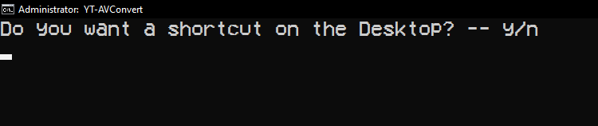

How to use the tool.
INSTALLING
Firstly, download the files from our website and open the install executable.
Then go through the installing proccess.
Be sure to open in administrator mode as it is required for proper installing of program files.
After opening the program, press any key to start installing.
The program will start installing YT-DLP and FFMPEG on your computer.
BEWARE, YT-DLP and FFMPEG together take about 180 megabytes of storage. Be sure that you have enough storage before proceeding.
Now the program will ask you to make a shortcut on the desktop.

A mandatory thing to do is state if you have the desktop folder in your OneDrive folder.
If you do, type in "y" as in Yes, and "n" as in No.
After completing the first part of the setup we move on to setting up the location in your computer for media saving.
Follow instructions on screen. Type in "n" to proceed with setup, type "t" for more help in directory changing
You will be prompted to enter your own location/directory for media saving or setting it to one of the premade presets in the program.
For the presets type in "p" or copy your desired directory from the File Explorer and press Enter.
If presets were selected, you would be prompted with typing in letters that correspond with the presets.
After the installing proccess is finished, a white screen with green letters will appear stating that the install has finished.

For any help in the future you can always type "help" in the main program.
AUDIO CONVERSION
Open the main application and find a video you want to convert.
Type in "a" for audio.
The program will ask you if you want to trim the video. Type in "y" for Yes or "n" for No.
After that input the URL of the youtube video by clicking the right mouse button to paste the link inside of the program and choose the format.
The video should start conversion to audio and will be sent to the destination you set in the directory setup.
VIDEO CONVERSION
Open the main application and find a video you want to convert.
Type in "v" for video.
The program will ask you if you want to trim the video. Type in "y" for Yes or "n" for No.
After that input the URL of the youtube video by clicking the right mouse button to paste the link inside of the program and choose the format.
The video should start conversion to a video file and will be sent to the destination you set in the directory setup.
TRIMMING
Open the main application and find a video you want to convert.
Type in "a" for audio or "v" for video.
The program will ask you if you want to trim the video. Type in "y" for Yes.
After that input the URL of the youtube video by clicking the right mouse button to paste the link inside of the program and choose the format.
Then IN SECONDS input the desired start and end time of the clip.

The video should start conversion to a video file and will be sent to the destination you set in the directory setup.
CHANGING OUTPUT DIRECTORY
Open the main application and find type in "cdir". The same screen will pop up that poped up when installing.
You will be prompted to enter your own location/directory for media saving or setting it to one of the premade presets in the program.
For the presets type in "p" or copy your desired directory from the File Explorer and press Enter.
If presets were selected, you would be prompted with typing in letters that correspond with the presets.
Press enter and the program will tell you that the output path is now changed.
UNINSTALLING YT-AVC
Go to the download folder and look for "Uninstall YT-AVConvert.bat"
Be sure that you're in administrator mode for proper function of the software.
Run it, then press any key to continue.
You have deleted the program files, but the installation files will have to be removed manually.
Got any questions or bug reports?
Report them or ask me about them in the github or on e-mail!
YT-AVC Github
My E-mail: skuffymelon@gmail.com